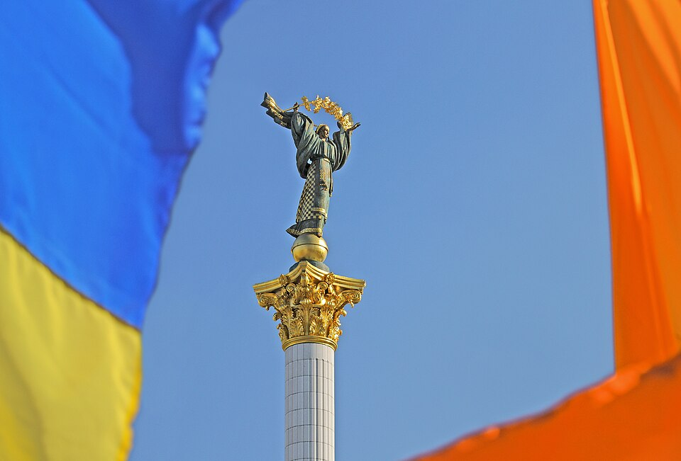

A42-POL-047 // HISTORICAL CLAIM REVIEW
Ukraine's 2004 Election and the Orange Revolution
Assessment: The first runoff was not a reliable expression of votes and was properly annulled by Ukraine's court.


The precise allegation
Ukraine's 2004 presidential runoff was marred by evidence of fraud favoring Viktor Yanukovych over Viktor Yushchenko. Domestic observers, international monitors, and the Supreme Court identified serious violations, leading to a rerun that Yushchenko won. Russian support for Yanukovych is documented, but the specific claim that Moscow secretly controlled the vote count is broader than the proven evidence.
Chronology and political context
The first round proceeded with competition, but the November 21 runoff produced implausibly pro-government results in some regions and reports of pressure and ballot manipulation. Mass protests followed. Ukraine's Supreme Court invalidated the runoff; a December 26 repeat election was held under closer scrutiny and certified for Yushchenko.
Primary historical record
The Supreme Court ruling, OSCE election-observation reports, Central Election Commission data, and Ukrainian observer records provide primary evidence. The judgment identified systematic violations sufficient to question the outcome. The rerun itself offered a practical remedy, though it cannot precisely identify every fraudulent ballot in the original round.
Corroboration and contrary evidence
Domestic civil-society monitors and international observers independently reported irregularities. Academic studies confirm regional vote patterns shifted sharply under different monitoring conditions. The evidence supports serious domestic manipulation; Russian political support and involvement are well documented, but no public evidence shows Russian officials themselves altered Ukraine's official tally.
What remains uncertain
The scale of individual fraud and the degree of coordination among local administrators remain uncertain. The rerun changed campaign conditions as well as monitoring, so the vote swing cannot be attributed solely to removal of fraud. External influence included endorsement, finance, and media; each form should not be conflated with direct electoral-system control.
Calibrated verdict
The first runoff was not a reliable expression of votes and was properly annulled by Ukraine's court. The rerun's result is broadly credible. Domestic officials' manipulation is established; Russian political intervention is clear, while direct Russian control of ballot counting is unproven.
What evidence could change this assessment
A preserved ballot-by-ballot audit and full local administrator communications could quantify manipulation. Authenticated Russian operational orders to alter tallies would strengthen a direct-control allegation. Additional independent observation showing systematic clean counting would weaken it; current records support domestic fraud with external political pressure.
Sources and source limits
- OSCE/ODIHR — Ukraine presidential election 2004 final reportIndependent international observer report documents serious irregularities; observation is extensive but not a forensic recount of every ballot.
- Supreme Court of Ukraine — 2004 election decision materialsCentral Election Commission and court records provide official data; access and translations may be incomplete.
- National Democratic Institute — Ukraine's 2004 presidential electionObserver and democracy-support analysis documents campaign and voting conditions; organization has an advocacy mission and should be read with legal records.